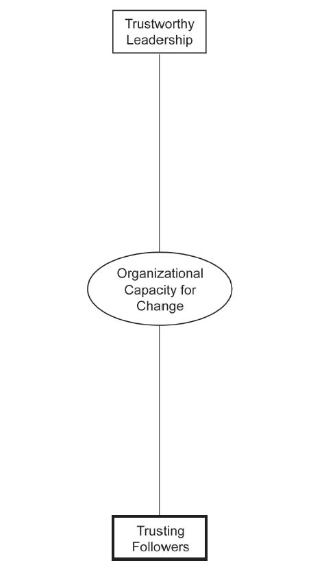

If you are interested in building organizational trust in order to make your organization or organizational unit more change capable, the following are some actionable ideas that you can pursue to make that a reality.
It is important for executives to systematically collect data on the state of the overall organization, particularly with respect to organizational trust. After all, what gets measured gets managed. The easiest way to do this is through anonymous surveys of employees. However, it can also be done by watching for mistrust signals, such as employee sentiment that a new policy was unfair, or the firing of a manager was a mistake, or the launching of a new project was ill-considered. While there is no substitute for executive intuition, trust data can add precision and clarity to the situation. In a later chapter, we provide guidance as to how that data might be reliably collected and analyzed. Trend information is particularly important since comparisons over time tend to be the best indicator of how the current top management team is affecting organizational trust. Of course, knowledge and understanding of previous organizational events that damaged or encouraged trust is valuable information.
People trust others who they believe understand them.Brownell (2000). How does an old-line manufacturer in a stagnant industry manage to grow 25% per year for 10 years? The answer, made in a recent Inc. Magazine cover story, is, by taking its employees seriously and listening to them. Atlas Container makes cardboard boxes. They also practice “open book management” and engage in workplace democracy.Case (2005). In another instance, the Ford Motor Company turned its poorest-performing plant operating near Atlanta to one of its best, simply by engaging in dialogue with the entire 2,000-member unit.Bunker and Alban (1997). Both of these anecdotes illustrate that a tremendous amount of employee trust and energy is liberated simply by engaging in dialogue, rather than in the more traditional top-down communiqués that occur throughout the business world.
Robert Kelley argues passionately that leaders need constructive dissent from their subordinates in order to lead effectively. Clearly, this needs to be done with tact and diplomacy, but it can be done. Notably, the Intel Corporation trains each and all of its technically skilled employees in conflict management, and even goes so far as to identify its ability to surface and resolve conflict in the workplace as a distinctive competency.Thomas (2010). As such, the creation of an environment where constructive dissent is the norm is a valuable and rare organizational attribute.
Engaging in constructive dissent takes courage and willingness to incur the wrath of the rest of the organization. In general, organizations do not react well to those who disrupt the social harmony.Mercer (2010). Consequently, training and education as to how to respectfully disagree with a supervisor can be helpful. However, nothing replaces the importance of demonstrated examples. For example, when human resource directors constructively disagree with CEOs, their advice and contributions are taken more seriously.Stern (2009). In sum, constructive dissent is essential if you want to create trusting partnerships with your followers.
Inconsistencies and unfairness erode organizational trust very quickly. Individuals who vacillate, easily change their viewpoint depending on whom they are talking with, or refuse to make a decision because it may upset some people erode trusting partnerships.Brownell (2000), p. 11. While top executives are constantly confronted with exceptional circumstances and a continually changing environment, they must take care to avoid showing favoritism to one individual or group to the exclusion of other individuals or groups. Once again, this is easier said than done. What do you do when your star salesperson cuts corners with expense accounts? How fairly is affirmative action handled in your corporation? How do you handle requests by legitimately hurting subordinates who ask for exemptions from standard operating procedures? Sometimes, the manner in which these issues are handled are just as important as what is decided. In any event, follower trust is not possible in a work environment that is not generally seen to be fair and consistent.
Most reward systems are focused on individual contributions, but collaboration and trust do not thrive in such a system. Rewards and accountability are important, and they earn a dedicated chapter in this book later on. However, their impact on organizational change capacity has a special power when it comes to engendering trust in the organization. Having said that, changing reward systems is very difficult to do. Simply recognize that it is a sheer waste of time to reward A (i.e., individual competition) while hoping for B (i.e., collaborative partnerships), as the classic article by Steven Kerr attests.Kerr (1975).
As Jim Collins suggests, you need to “get people off the bus who don’t want to go where you are going.”Collins (2001b). While creating trust is typically a “warm and squishy” idea, there is a hard side to trust that involves punishment and sanctions applied to those who are just not capable of creating trusting relationships, nor are they inclined to do so. The following is an excerpt by Jim Collins that explains why this is so important:
When it comes to getting started, good-to-great leaders understand three simple truths. First, if you begin with “who,” you can more easily adapt to a fast-changing world. If people get on your bus because of where they think it’s going, you’ll be in trouble when you get 10 miles down the road and discover that you need to change direction because the world has changed. But if people board the bus principally because of all the other great people on the bus, you’ll be much faster and smarter in responding to changing conditions. Second, if you have the right people on your bus, you don’t need to worry about motivating them. The right people are self-motivated: Nothing beats being part of a team that is expected to produce great results. And third, if you have the wrong people on the bus, nothing else matters. You may be headed in the right direction, but you still won’t achieve greatness. Great vision with mediocre people still produces mediocre results.Collins (2001b), p. 42.
Exceptional people build trust; mediocre people destroy trust. Avoid hiring and get rid of those who destroy trust in your organization. As Jack and Suzy Welch succinctly stated, “Send the jerks packing.”Welch and Welch, 2006.
There is considerable pressure on leaders to waffle and evade or just not be accessible. The belief is that the rest of the organization just does not understand the complexities and nuances of the information held at the senior-most level. There is a grain of truth to this belief; however, leaders need to understand that straight talk is essential for creating organizational trust. Recent research demonstrates that positive transparency on the part of leaders can greatly enhance followers’ trust disposition.Norman, Avolio, & Luthans, (2010).
Interestingly, Microsoft Corporation has a relatively high level of organizational trust. For example, 9 out of 10 employees at Microsoft Netherlands said they could “ask management any reasonable questions and get a straight answer.” This is particularly noteworthy since the organizational unit recently underwent a downsizing experience.Maitland (2008), p. 2. The same can be said for labor unions, which is not easy to do in this day of declining union strength. Clearly, straight talk and transparency are keys to enhancing organizational trust in all parts of the organization.
In summary, organizational trust is essential to be change capable. This requires both trustworthy leaders and trusting followers. Figure 4.1 "The Second Dimension of Organizational Capacity for Change: Trusting Followers" contains a graphic that summarizes these first two dimensions of organizational capacity for change.
Figure 4.1 The Second Dimension of Organizational Capacity for Change: Trusting Followers
